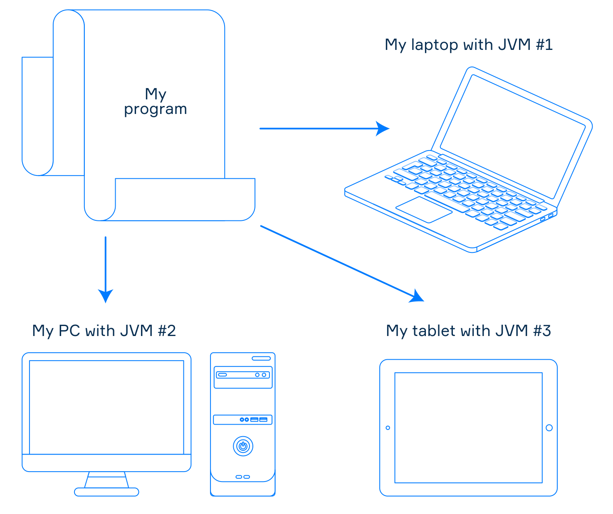
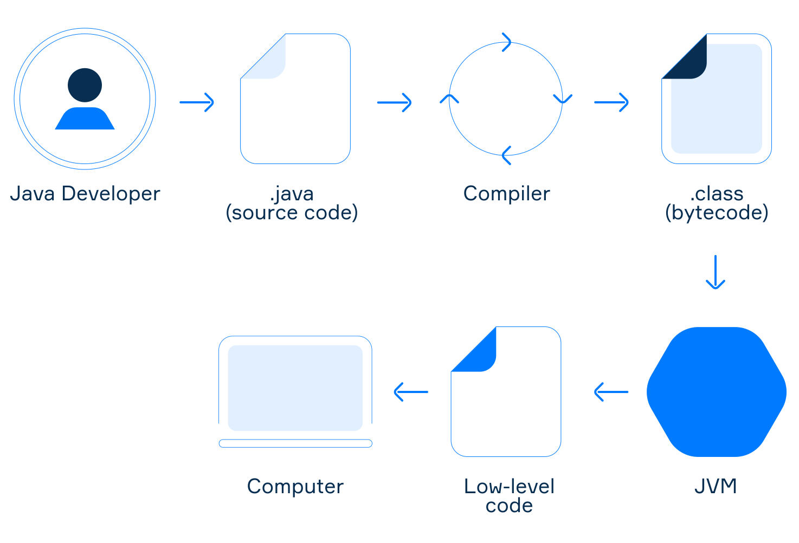
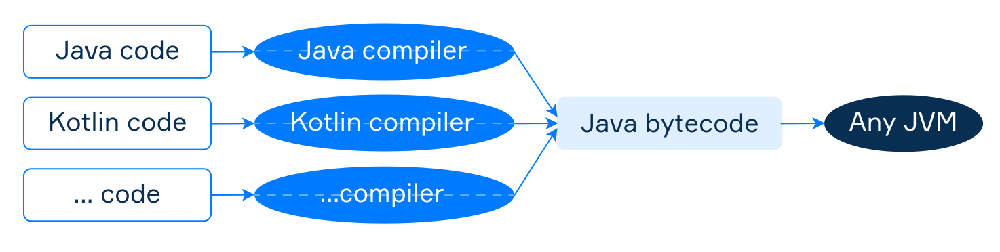

Напишіть, скомпілюйте та запустіть
Теорія
Навіть якщо ви не досвідчений програміст, ви напевно щось чули про Java. Це не лише мова програмування, а й широко використовувана програмна платформа. У цій темі ви отримаєте деякі важливі ідеї щодо платформи Java та дізнаєтеся, як писати та запускати програми в середовищі Java.
§1. Написання програми
Як розробник, перше, що ви робите під час створення програми, це пишете вихідний код у звичайний текстовий файл і зберігаєте його з розширенням, що відповідає вибраній вами мові програмування (.java для мови Java, .kt для Kotlin тощо). Одна програма складається з одного або кількох таких файлів, які містять інструкції, які визначають, що програма має робити. Вихідний код має відповідати правилам синтаксису відповідної мови та бути легким для читання та розуміння.
§2. Компіляція
Після написання коду потрібно змусити комп’ютер запустити програму. Оскільки комп’ютери не розуміють вихідний код, його потрібно перевести у формат, зрозумілий комп’ютеру. Ось тут і стане в нагоді спеціальна програма під назвою компілятор. Код, отриманий після компіляції, називається власним кодом або кодом низького рівня. Кожна комп’ютерна платформа використовує різні команди низького рівня, так само як люди в усьому світі говорять різними мовами. Це створює додаткову проблему для використання програми на різних пристроях.
У світі Java компілятор (інструмент javac для Java або інструмент kotlinc для Kotlin) перетворює вихідний код у проміжне представлення, відоме як байт-код Java, що зберігається у файлах із розширенням .class. Комп’ютери не можуть читати байт-код без перекладу, але система під назвою віртуальна машина Java (Java Virtual Machine - JVM) може його виконати.
§3. Запуск програми
Віртуальна машина Java (JVM) — це програма, яка представляє віртуальний комп’ютер відповідно до документа специфікації JVM. Він виконує скомпільований байт-код Java і перетворює його в команди низького рівня, які розуміє комп’ютер. Кожна платформа має власну версію JVM, але оскільки всі JVM відповідають одній специфікації, ваша програма поводитиметься однаково на різних пристроях.
Однією з головних концепцій платформи Java є «написати один раз, запустити будь-де». Це означає, що програма може працювати на різних пристроях, якщо на них встановлено JVM. Цю концепцію також часто називають незалежністю від платформи або портативністю.
Важливо пам’ятати: вхідний код у JVM не залежить від платформи, а вихідний код залежить від платформи.

Незалежна від платформи програма у світі Java
Якщо JVM встановлено на комп’ютері, ви можете запустити скомпільовану програму JVM за допомогою інструмента java. Він відкриє файл із розширенням .class, щоб запустити програму з цього файлу. Інструмент однаковий для всіх мов JVM.
На зображенні нижче коротко показано робочий цикл програми JVM.
§4. JVM мови
Платформа Java дозволяє використовувати більше однієї мови програмування для створення програм. Це досягається дизайном JVM: вона нічого не знає про жодну конкретну мову програмування. Вона розуміє лише байт-код Java. Якщо інструменти для мови програмування можуть генерувати байт-код, програми, написані цією мовою, можуть виконуватися на JVM. Такі мови часто називають мовами JVM. Серед них сама Java, Kotlin, Scala, Groovy, Clojure та інші. Отже, щоб створювати програми у світі Java, ви можете вибрати найзручнішу мову на свій вибір.
Зараз ви можете знайти інструменти для створення байт-коду Java майже для будь-якої мови програмування, а це означає, що навряд чи існує мова, яка не є мовою JVM.
Для написання програм у світі Java можна використовувати різні мови програмування
§5. Висновок
- Розробники записують вихідний код програми в текстові файли з відповідними розширеннями.
- Компілятори перекладають вихідний код у байт-код Java, що зберігається у файлах .class.
- Віртуальна машина Java (JVM) виконує байт-код, надаючи комп’ютеру команди низького рівня.
- Усі JVM визначені специфікацією JVM, що забезпечує незалежність програм від платформи.
Ви також можете переглянути Урок на hyperskill.org.
Практичні завдання та відповіді
Подаються завдання та варіанти відповідей. Правильний варіант виділено синім кольором.
№1. MyHelloWorldApplication.class
Питання: задано файл MyHelloWorldApplication із розширенням .class. Що містить цей файл?
Виберіть один варіант зі списку:
- Машинний код
- Вихідний код Java
- JavaScript
- Загальна проміжна мова
- Байт-код ✔
№2. Система, яка виконує програми Java
Питання: Введіть абревіатуру системи, яка виконує програми Java. Підказка: абревіатура складається з трьох літер.
Введіть короткий текст: JVM ✔
Пояснення. Абревіатура системи, яка виконує програми на Java, це — JVM (Java Virtual Machine).
№3. Документ
Питання: у світі Java існує документ під назвою «Специфікація JVM». Що це описує?
Виберіть один варіант зі списку:
- Як зробити мову програмування мовою JVM: набір правил синтаксису та компіляції, які має підтримувати будь-яка мова програмування, щоб бути мовою JVM.
- Мова програмування Java, включаючи синтаксис, виконання та інструменти.
- Список мов JVM, щоб кожен ознайомився з усіма можливими варіантами.
- Абстрактний комп’ютер і як він має працювати, щоб зробити програми портативними. ✔
Пояснення. «Специфікація JVM» описує абстрактний комп’ютер і те, як він має працювати, щоб зробити програми портативними (мультиплатформовими).
№4. Байт-код
Питання: Який інструмент генерує байт-код?
Виберіть один варіант зі списку:
- JVM мова
- JVM
- Компілятор ✔
- JVM специфікація
Пояснення. Компілятор — це інструмент, який генерує байт-код.
№5. Мови JVM
Питання: Яка з наведених нижче мов програмування може працювати на JVM?
Виберіть один або кілька варіантів зі списку:
- Kotlin ✔
- Scala ✔
- Groovy ✔
- Java ✔
Пояснення. Усі ці мови програмування можуть працювати на JVM.
№6. Незалежність від платформи
Питання: Виберіть правильне твердження щодо незалежності від платформи у світі Java:
Виберіть один варіант зі списку:
- Програми безпосередньо залежать від апаратного забезпечення комп’ютера та операційної системи.
- Програми повинні мати спеціальний синтаксис, щоб досягти незалежності від платформи.
- Програми виконуються на віртуальній машині Java, якщо операційна система не Linux.
- Програми виконуються на віртуальній машині Java для досягнення незалежності від платформи. ✔
Пояснення. Правильне твердження щодо незалежності від платформи у світі Java таке: програми виконуються на віртуальній машині Java для досягнення незалежності від платформи.
№7. Заяви (твердження)
Питання: Виберіть усі правильні твердження.
Виберіть один або кілька варіантів зі списку:
- JVM розуміє байт-код. ✔
- Комп’ютер розуміє вихідний код.
- Щоб запустити скомпільовану програму Java, на комп’ютері повинна бути встановлена JVM. ✔
- JVM забезпечує незалежність від платформи для програм Java. ✔
№8. На що перекладається вихідний код?
Питання: Компілятор мови JVM, наприклад Kotlin, перекладає вихідний код на...
Виберіть один варіант зі списку:
- Код користувача
- Бітовий код
- Байт-код ✔
- Біткойни
- Машинний код
Пояснення. Компілятор мови JVM, наприклад Kotlin, перекладає вихідний код у байт-код.
№9. Створення байт-коду
Питання: Як ви знаєте, світ Java використовує байт-код як фундаментальний камінь. Які з наведених нижче варіантів є дійсними способами створення байт-коду?
Виберіть одну або кілька опцій зі списку:
- Реалізуйте програму на Java та використовуйте JVM для створення байт-коду
- Напишіть код мовою JVM і використовуйте її компілятор для створення байт-коду ✔
- Запустіть свою програму принаймні на трьох різних комп’ютерах і об’єднайте їхні виходи для отримання байт-коду (концепція «напишіть один раз, запустіть будь-де»)
Пояснення. Нижче наведено дійсні способи створення байт-коду: реалізуйте програму на Java та використовуйте JVM для створення байт-коду; Напишіть код мовою JVM і використовуйте його компілятор для генерації байт-коду (відповідь ChatGPT).
Але в даному випадку сайт Hyperskill приймає лише один правильний варіант (виділений синім). Вихідний код (.java) -> Компілятор -> байт-код -> JVM -> Машинний код. JVM не є компілятором. Є тільки один правильний варіант.
№10. Призначення байт-коду
Питання: Для чого потрібен байт-код?
Виберіть один варіант зі списку:
- Це допомагає людям писати та розуміти програми
- Він компактніший, ніж вихідний код програми, тому програмісти використовують його, щоб швидше читати програму
- Він захищає вихідний код програм
- Це робить програми, написані мовою JVM, незалежними від платформи ✔
- Це дозволяє зберігати програму як набір байтів на комп’ютері
Пояснення. Байт-код робить програми, написані на мові JVM, незалежними від платформи.